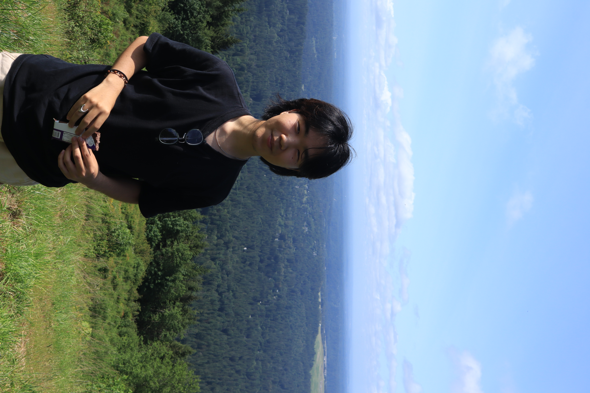

About Me
Hi, I'm Chris Su

Welcome to my personal page!
Background
I'm currently an undergraduate student at Carnegie Mellon University, where I study artificial intelligence and computer science.
I'm most interested in problems related to the nature of abstraction & reasoning.
Skills & Interests
In the past / currently, I've worked on the following:
- 2025–presentRecently joined @ Stagira Labs working on software in the intersections of formal methods, game theory, and rl
- 2024-presentControls Software Engineer @ Carnegie Mellon Racing, where I worked on improving simulation software and reducing testing hours + deep reinforcement learning and control theory
- Summer 2025SDE Intern @ Amazon Ads, where I built a validation stack for validating rankings/recommendations models + did some cool statistical studies
- Summer 2024REU program @ ASU Sensip Center for convnet dimensionality reduction using quantum computing
- 2022-2023Software intern @ Acivilate, inc., a gov-tech startup for reducing recidivism
- 2025–present*currently* building elastisched, an intelligent (non-ai) scheduler, built with python frontend, cpp backend that uses simulated annealing to find times for tasks you need to get done!
Random stuff i'm currently learning & goals
My Links
Connect with me online:
Get In Touch!
Email: chrisssu19 [@] gmail.com